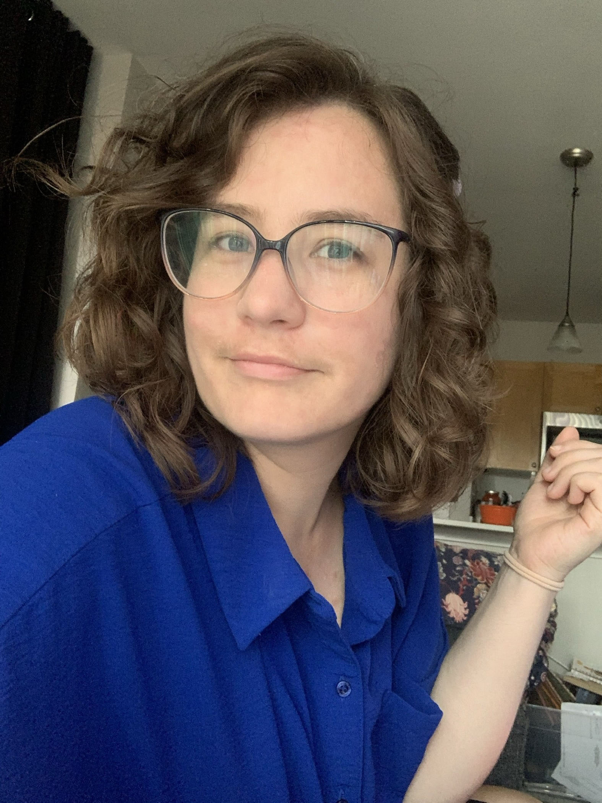
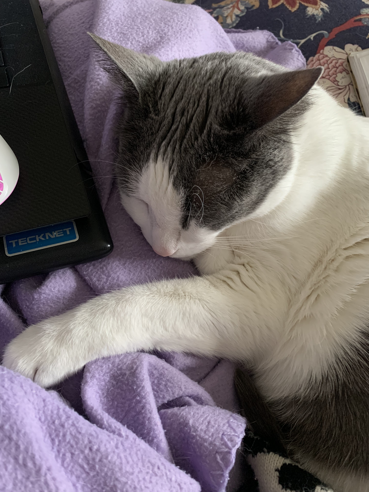
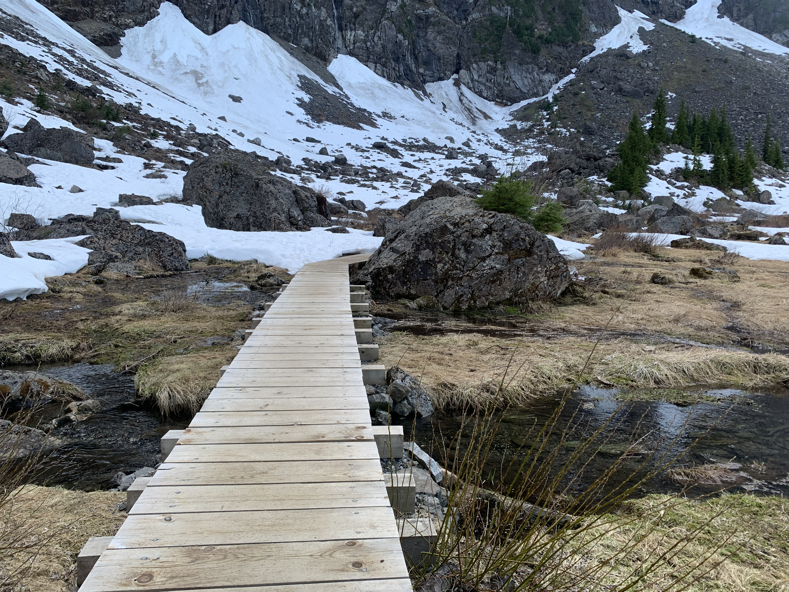

About Me
Hello!
My name is Maranda and I'm from Phoenix, AZ. I went to school and obtained a Bachelor's degree in Visual Communications from Northern Arizona University up in the mountains in Flagstaff, AZ. Although I have an great appreciation for the Sonoran desert, I craved a big change and lots of trees so after school I moved up to the Seattle area.
I've worked in a variety of design environments over the years from more of an agency setting to what I do now as the sole visual designer for an aviation software company. I love the challenges of adapting designs to various situations and I've worked with pretty much every digital medium from video editing, to website building, even some illustration as needed. And I'm ready to start my new challenge of living in Canada with my boyfriend.
Outside of work, I play video games with my boyfriend and our friends, primarily World of Warcraft (where we push seasonal challenges and design fun houses), but I also enjoy games that let me build houses or farms whether with friends or just by myself. I'm a big fan of hiking especially after the rain when all the slugs come out and of course spending time with my cat (Ping). And I'm always challenging myself to learn something new (such as more about Figma, more French, and more video editing.)



